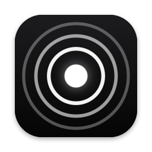
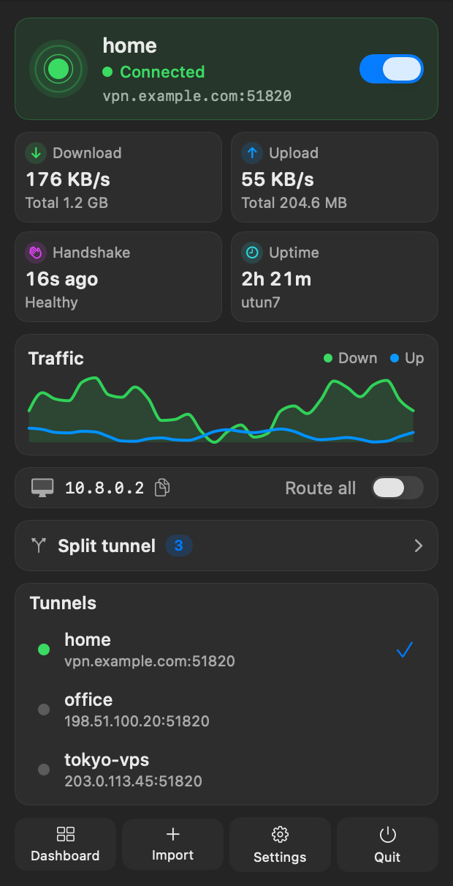
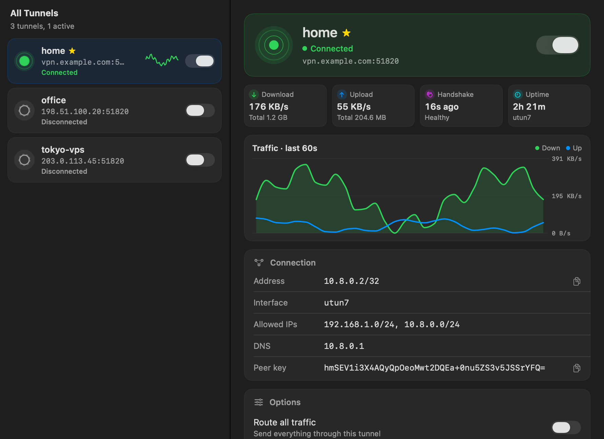

Wirelight
A friendly menu bar client for WireGuard® tunnels on macOS. Free, open source, and no Network Extension needed.


One switch
Connect from the menu bar and see live speed, handshake and uptime at a glance.
Split DNS and exclusions
Send only some domains to the tunnel's DNS, and keep chosen ranges off the tunnel.
Stays connected
Recovers after sleep and network changes, and warns you when the handshake goes quiet.
Keys stay private
Configs live in your Keychain. The helper never runs scripts from config files.
Install
- Install the WireGuard tools with Homebrew:
brew install wireguard-tools wireguard-go - Download Wirelight.pkg and open it.
- Open Wirelight, choose Import, drop in your
.conffile, and flip the switch.
Uninstall
sudo /usr/local/share/wirelight/uninstall.sh